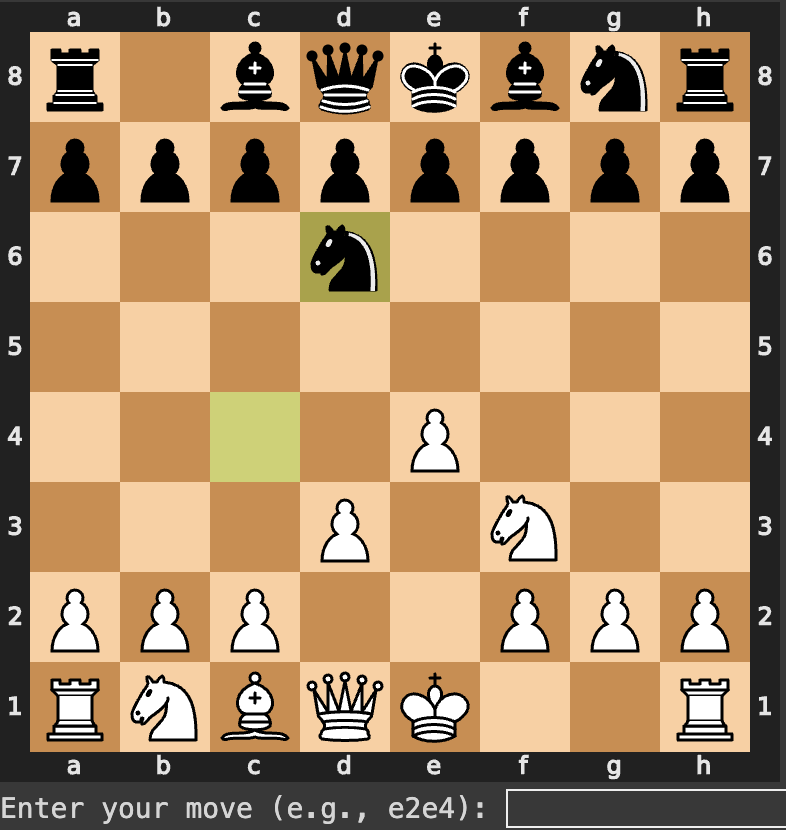

Drawing with rotating circlesusing JavaScript I applied the fourier Transform onto a sequence of points which let me draw a series of rotating epicycles.To create your own sequence of points to draw, click the button below and draw on the canvas! |
|
Graphing my faceusing python I harvested and analyzed for 30,000 points of data to produce accurate mathematical equations which could be plotted in desmos. link to the graph. |
|
|
|
Belousov Zhabotinsky cellular automataUsing cellular automata and JavaScript, I created a randomly generated simulation of the Belousov Zhabotinsky reaction. With object oriented programming, each cell was able to have it's own output which changes every generation.the simulation is based off of Belousov Zhabotinsky click to restart the simulation or refresh |
|  | Chess AIIt was difficult to come up with an evaluation function for the min-max algorithm. For this AI, the eval function is purely based off of positional advantage with certain pieces being valued more at certain spots. Positional advantage also changes depending on what stage of the game we're on (calcualted by number of pieces on the board). Using python and alpha-beta pruning, I was able to make this bot significantly faster. It's chess ELO is estimated between 1300-1500 on chess.com.Google Colab Notebook is buggy, so you might need to stop/start the last code-block a couple of times until an input box shows. |